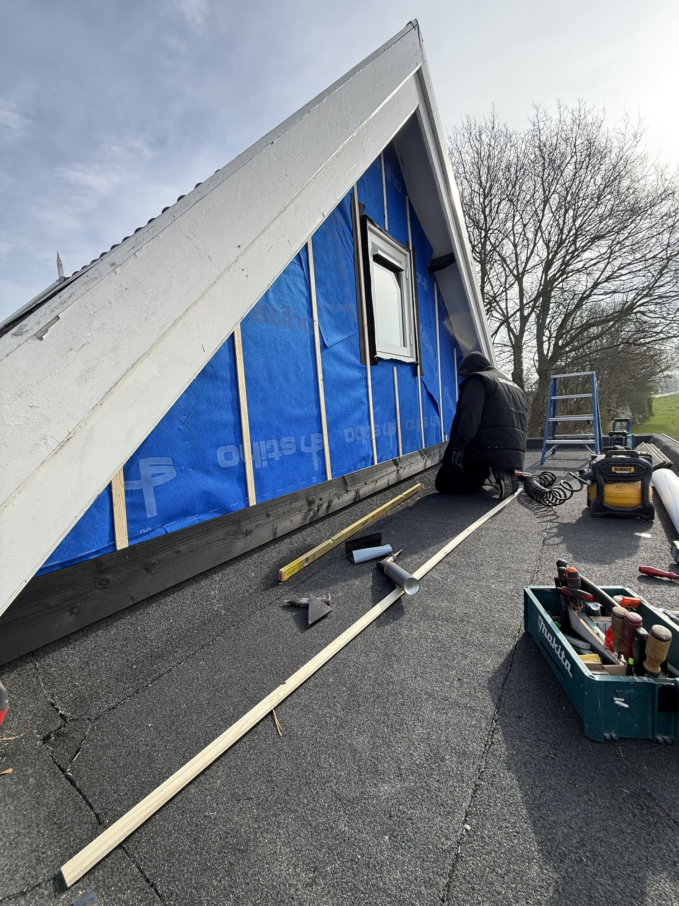
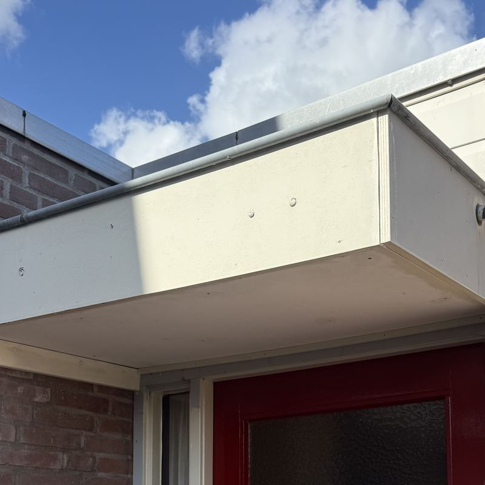

Vakwerk.
Zonder
omwegen.
Een nieuw kozijn. Een strakke gevel. Die ene klus die maar blijft liggen. ATO pakt uw timmerwerk aan.

- Gediplomeerd & verzekerd
- Snelle service
- Vrijblijvende offerte
Uw huis.
Ons vak.
Herstellen waar het kan. Vervangen waar het nodig is. Van klein onderhoud tot compleet nieuw timmerwerk.
Ramen & deuren
Nieuwe ramen, deuren en complete kozijnen. Op maat geplaatst en netjes afgewerkt.
Gevelbekleding
Uw gevel opnieuw bekleed met Trespa of multiplex, met oog voor de afwerking.
Boeilijsten
Verweerde boeilijsten vervangen in een materiaal dat bij uw woning past.
Houtrotherstel
Houtrot in uw kozijnen aanpakken. We bekijken of herstellen een goede oplossing is.
Hang- & sluitwerk
Scharnieren, sloten en beslag vervangen. Zodat ramen en deuren weer goed sluiten.
Overig timmerwerk
Een andere klus aan of om het huis? Vertel wat u nodig heeft. We denken mee.
Klik op een werkzaamheid en bespreek uw klus via WhatsApp.
Het verschil
zit in het werk.
Een kozijnhoek met houtrot, hersteld en opnieuw geschilderd. Schuif om het verschil te zien.
Twee foto’s van hetzelfde kozijn, voor en na het werk van ATO.

 VoorNa
VoorNaEerst zien.
Dan geloven.
Klussen van het afgelopen jaar. Kies per klus tussen voor, tijdens en na.

Schuur met nieuwe dakrand
Boeilijsten

Houtrot naast een raam
Houtrotherstel

Nieuwe kozijnen
Ramen en deuren

Luifel boven de voordeur
Boeilijsten

Installatie op zolder weggewerkt
Overig timmerwerk

Scheidingswand in een kantoor
Overig timmerwerk
Kort lijntje.
Helder plan.
Een klus begint met een goed gesprek. U vertelt wat er speelt, wij denken mee over de oplossing.
- 1
Laat uw klus zien.
Bel of stuur een WhatsApp. Een paar foto’s helpen om uw vraag helder te krijgen.
- 2
We denken mee.
We bespreken wat er nodig is. U krijgt een vrijblijvende offerte voor het werk.
- 3
Aan de slag.
Na uw akkoord spreken we de uitvoering af. ATO verzorgt het timmerwerk.
In de buurt.
Voor uw huis.
ATO werkt in Voorne aan Zee en komt ook regelmatig in Spijkenisse en Ouddorp. Een klus net daarbuiten? Neem gerust contact op.
- Voorne aan Zee
- Spijkenisse
- Ouddorp
Wat kunnen
we voor u maken?
Vertel over uw klus. Bel, mail of stuur een paar foto’s via WhatsApp. De offerte is vrijblijvend.